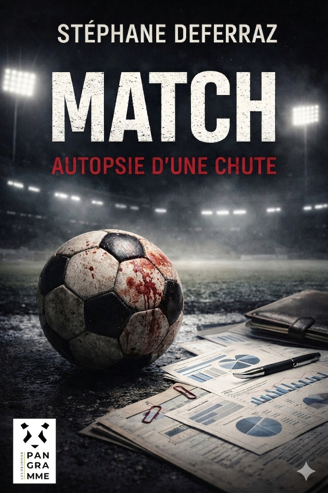

... Finit par entraîner le footballeur-star du Réal Castille, Kévin Pabé, dans une course-poursuite aux allures de cauchemar. Ce texte inédit plonge le lecteur dans les arcanes du football-spectacle, où se mêlent luttes d'influence, propagande d'État, tyrannie de l'argent et tragédie personnelle. Il livre une réflexion saisissante sur les dérives d'un système qui finit par dépasser ceux qui l'alimentent.
Un texte dense et resserré — environ 140 pages.
Lire les premières pages.
Télécharger